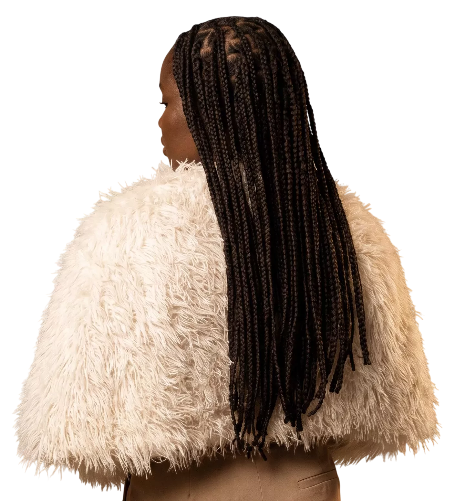
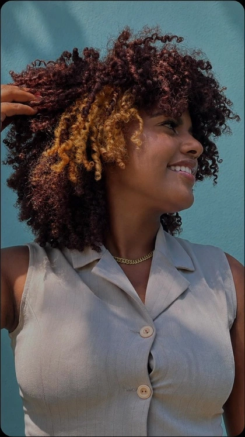
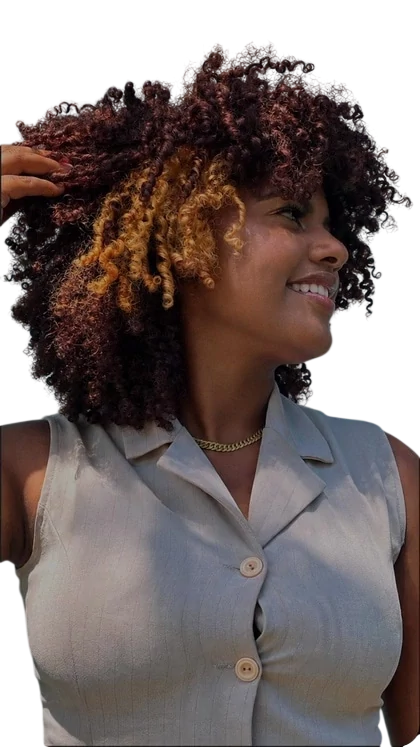
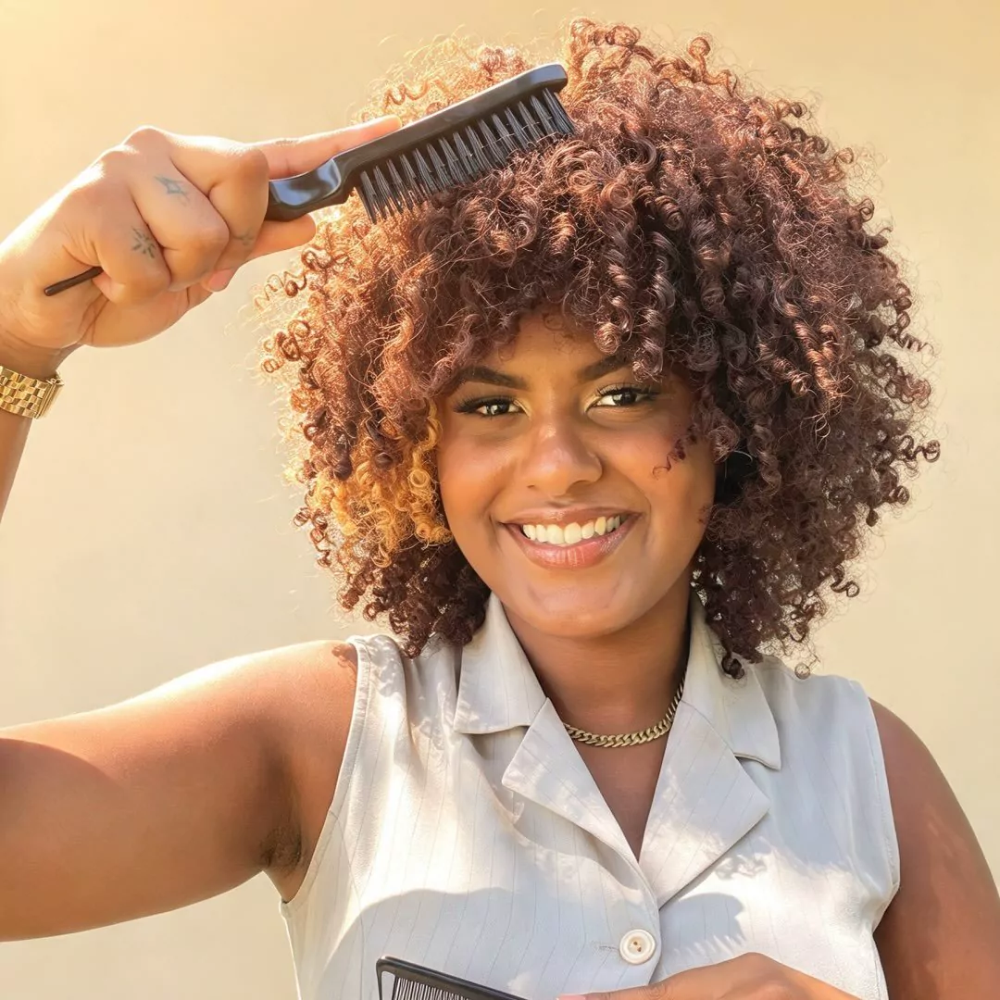

01
Tranças individuais
- Box Braids
- Knotless
- Gyps Braids
- Boho Braids
Trancista · Lucas do Rio Verde/MT
Um catálogo para olhar os estilos que faço e escolher o que você quer levar para a conversa.



Quem faz as tranças
Sou a trancista por trás da Rbc_tranças. Aqui reuni tranças e penteados que faço para você explorar com calma e escolher uma referência para me enviar.
Beleza · Cachos · Academia BA ↔ MT
Onde Deus me plantar, minhas mãos florescerão.Acompanhe meu trabalho no Instagram
O catálogo
Estes são os modelos e penteados que faço. Envie o nome do estilo ou uma foto de referência para conversar comigo.
Portfólio
Deslize para ver os detalhes. Toque em uma foto para ampliar e consultar esse modelo.
Tranças individuais vistas de perfil, com variação de tons no comprimento.
Comprimento escuro fotografado por trás.
Tranças compridas sobre os ombros, em foto de perfil.
Linhas trançadas junto à cabeça e comprimento em tom castanho.
Desenho de linhas e divisões visíveis na raiz.
Linhas trançadas próximas à cabeça, fotografadas de perto.
Penteado curto com linhas trançadas próximas à cabeça.
Penteado fotografado de cima e de perfil.
Tranças escuras com pontas onduladas em tom castanho.
Tranças longas com mechas castanhas, vistas pelas costas.
Registro de comprimento e volume das tranças.
Tranças escuras que se encontram com pontas onduladas.
Linhas trançadas em cabelo curto, vistas de cima.
As fotos mostram o resultado visual; confirme comigo o nome exato do estilo e os detalhes do atendimento.
Modelos e valores
Os valores e o tempo de cada serviço ainda serão confirmados comigo. Os campos ficam abertos para preencher quando eu aprovar a tabela.
Consultar um modelo| Modelo | Valor | Duração |
|---|---|---|
| Box Braids | R$ [PREENCHER] | [PREENCHER] |
| Knotless | R$ [PREENCHER] | [PREENCHER] |
| Gyps Braids | R$ [PREENCHER] | [PREENCHER] |
| Boho Braids | R$ [PREENCHER] | [PREENCHER] |
| Ghana | R$ [PREENCHER] | [PREENCHER] |
| Nagô | R$ [PREENCHER] | [PREENCHER] |
| Boxeadora | R$ [PREENCHER] | [PREENCHER] |
| Entrelace | R$ [PREENCHER] | [PREENCHER] |
| Entrelace com Nagô | R$ [PREENCHER] | [PREENCHER] |
| Crochê Braids | R$ [PREENCHER] | [PREENCHER] |
| Twister | R$ [PREENCHER] | [PREENCHER] |
| Chanel | R$ [PREENCHER] | [PREENCHER] |
| Rabo de Cavalo | R$ [PREENCHER] | [PREENCHER] |
| Penteados femininos e masculinos | R$ [PREENCHER] | [PREENCHER] |
Serviços adicionais
Antes de marcar
Cada atendimento começa com uma conversa sobre o modelo escolhido. Regulamento e pagamento serão publicados depois de confirmados.
Orientações para o dia do atendimento: [PREENCHER]
Horários, sinal, atrasos e cancelamentos: [PREENCHER]
Formas de pagamento aceitas: [PREENCHER]
Onde atendo
Atendimento em Lucas do Rio Verde, no Mato Grosso.
Endereço e ponto de encontro: [PREENCHER]
Combinar localizaçãoDúvidas
Se a sua pergunta não estiver aqui, escreva para mim pelo WhatsApp.
Perguntar à RebecaOs valores e o tempo de cada modelo ainda não estão preenchidos neste catálogo. Envie o nome ou uma foto de referência para a Rebeca confirmar esses detalhes.
Conte o estilo que chamou sua atenção ou envie uma foto de referência para a Rebeca entender o que você procura.
A cidade informada é Lucas do Rio Verde, no Mato Grosso. O endereço completo e o ponto de encontro devem ser alinhados diretamente com a Rebeca.
As formas de pagamento ainda precisam ser confirmadas. Pergunte à Rebeca antes de combinar o atendimento.

Rbc_tranças · Lucas do Rio Verde, MT
Envie o nome do modelo ou uma foto de referência. Eu respondo com os detalhes que faltam para combinar seu atendimento.
Conversar com a Rebeca